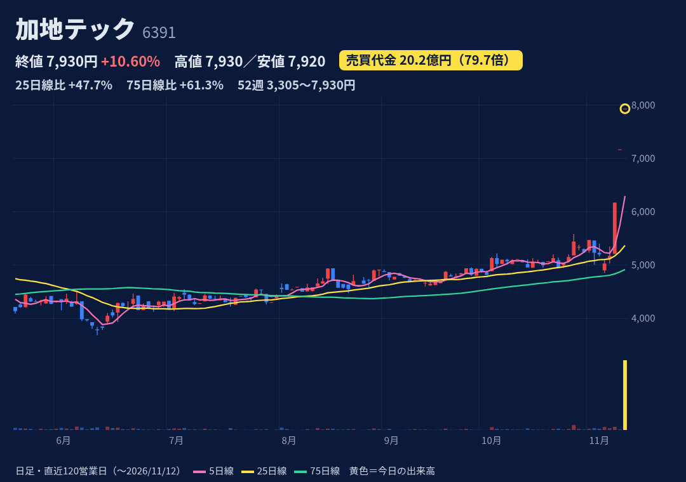
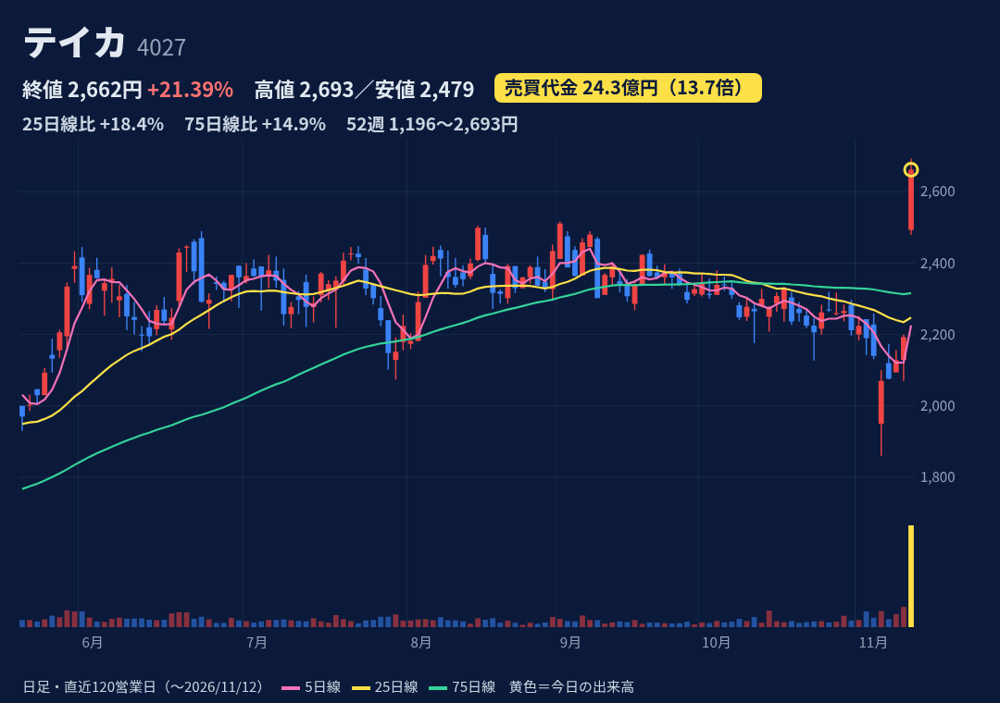
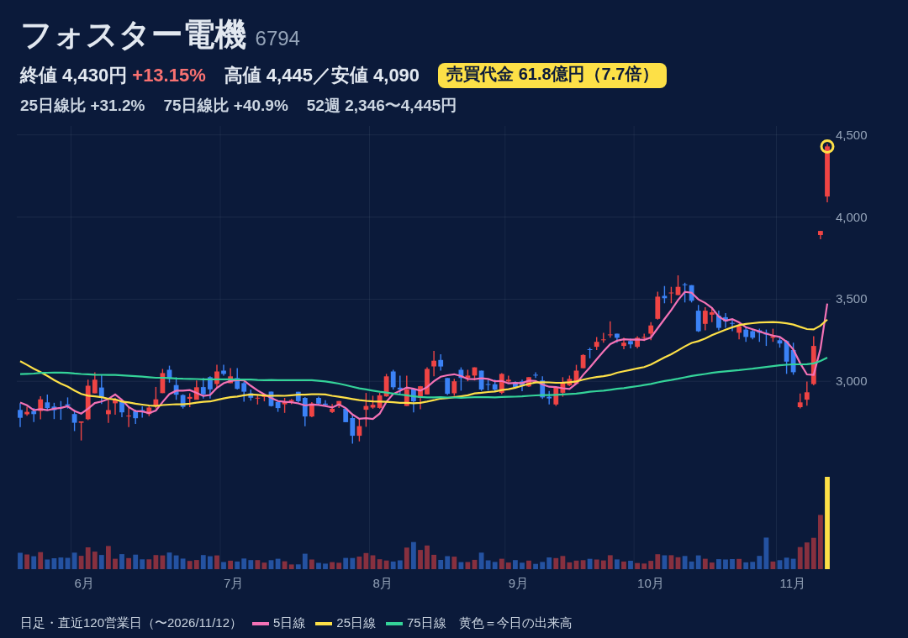
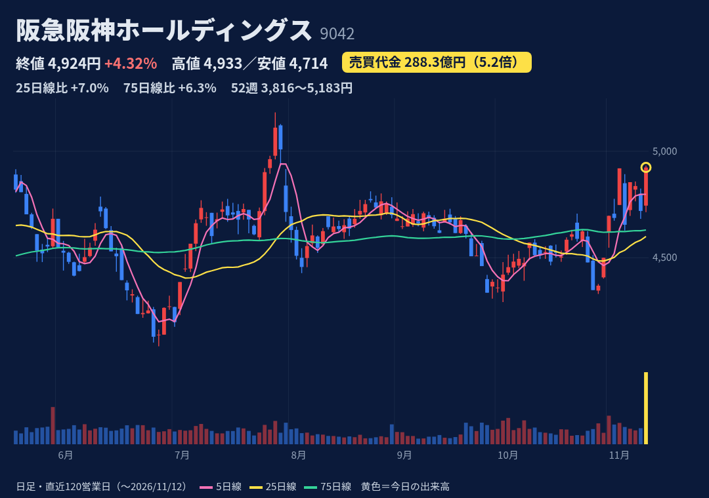
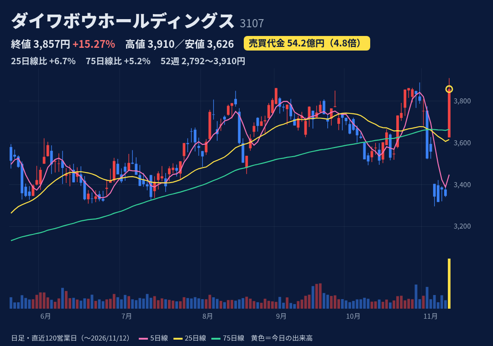
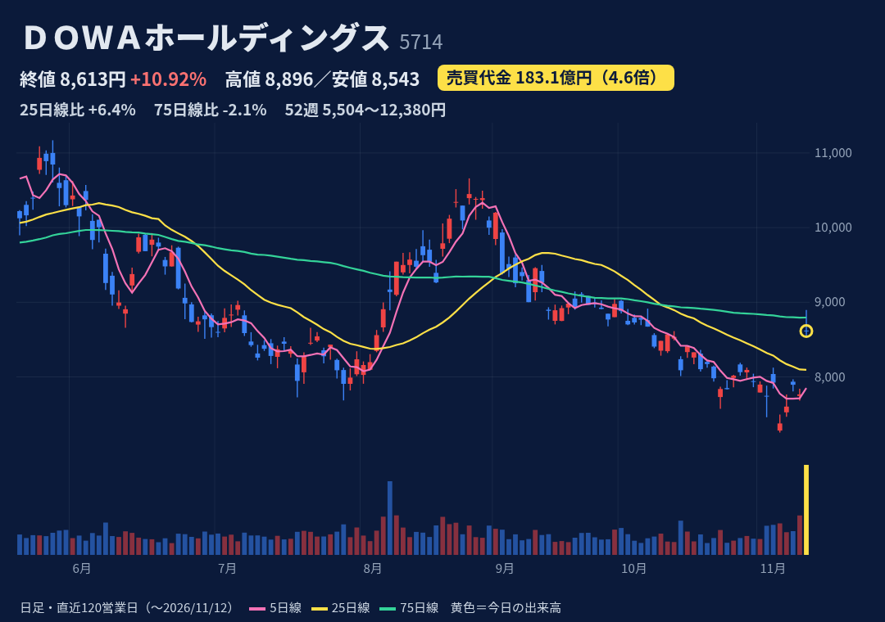

LNG等プラント用ガス圧縮機・水素ステーション向け設備。三井E&S（51.06%）の子会社。
11/10 14:30開示：CSRI17号がTOB（1株7,957円、期間11/11〜12/23、下限258,300株）、会社は賛同・応募推奨。三井E&Sは不応募契約。非公開化・上場廃止予定、配当は無配に修正。今日はTOB価格へのサヤ寄せ。
上期（11/10）売上25.6億円（-2.2%）、営業益3.7億円（2.6倍）。通期予想 売上71億・営業益9.7億を据え置き。上場廃止予定で次回決算の意味は薄い。
始値＝高値＝終値7,930円・安値7,920円の張り付き。11/10+19%、11/11+16%（S高）に続く3連騰で52週高値。25日線比+48%。TOB価格との差は27円。
JPX 11/11時点 買残5.1万株・売残0。日々公表・増担保の指定なし（11/12夜確認）。11/10から監理銘柄（確認中）に指定。
上値はTOB価格7,957円が事実上の上限（対抗TOB等がない限り）。不成立なら急落の恐れ。上場廃止予定で「初動」の対象外。
出典：

酸化チタンと界面活性剤が主力の化学メーカー。圧電材料も手がける。
11/11 16:20開示：上期営業益32億円（前年同期2.3倍、従来予想18億）。通期を上方修正（売上595→680億、営業益25→33億、最終18→25億）、年間配当80→110円に増配。汎用酸化チタン・界面活性剤の受注好調。
上期売上339億円（+25.3%）、営業益32億円（2.3倍）。通期営業益33億円で上期進捗97%＝会社計画の下期営業益は約1億円の計算。次回3Q決算は日付未発表（前年は2/6）。
気配で始値2,493円→高値2,693円→終値2,662円の陽線（上ヒゲ31円）。52週高値更新、25日線+18%・75日線+15%。過去1年の+7%超の日（4回）は10日後-3〜+10%とまちまち。
JPX 11/11時点 買残216.7万株・売残4.8万株、倍率約45倍。買残は今日の出来高93万株の約2.3日分と重い。日々公表・増担保の指定なし。
通期計画は下期の減速が前提。信用買残が多く戻り売りの重しになり得る。酸化チタンは市況・原料価格の影響を受けやすい。
出典：

車載スピーカー・ヘッドホン等の音響機器OEM。生産は全量海外。
11/10 20:00開示：中期計画2031（最終年度に営業利益率約7%・配当性向110%）。今期から前倒しで年間配当115→245円（期末60→190円）。大株主アクシウム・キャピタルが策定に関与（みんかぶ）。子会社エステックへのTOBも開示。
上期売上735億円（+10.3%）、営業益31億円（-27.8%）。通期予想 売上1,400億・営業益80億（+4.3%）、進捗39%。次回3Q決算は日付未発表（前年は2/10）。
11/10+9.6%（発表前・理由未確認）、11/11+21.8%（S高）、今日+13.2%。始値4,125→終値4,430円とほぼ高値引け。52週高値更新、25日線+31%・75日線+41%。
JPX 11/11時点 買残71.7万株・売残9.4万株、倍率約7.6倍。買残は11/6の97万株から減少。日々公表・増担保の指定なし。
上期は営業減益で、配当性向110%は利益以上を配る計算＝持続は利益次第。3日で約+50%と短期過熱。アクティビスト関与。
出典：

阪急・阪神電鉄を軸に不動産（梅田再開発）・ホテル・エンタメ（阪神タイガース等）を展開する持株会社。
TDnet開示は11/11〜12になし。11/12提出の半期報告書の大株主欄で米シタデル4.47%・野村絢氏（旧村上ファンド系）1.47%が判明し材料視（トレーダーズ11:12、共同通信）。
上期（10/30）売上6,415億円（+7.1%）、営業益817億円（-2.9%）。通期営業益を1,217→1,277億円に上方修正、進捗64%。次回は日付未発表（前年3Qは1/30）。
始値4,745→終値4,924円のほぼ高値引け陽線。52週高値5,183円（7/29）の約5%下、25日線+7%・75日線+6%。売買代金3倍超は過去1年で今日だけ。
JPX 11/11時点 買残18.0万株・売残8.4万株、倍率約2.1倍。出来高594万株に比べ小さい。日々公表・増担保の指定なし。
大株主欄は9/30時点の保有で、その後の売買は不明。シタデルの保有目的は未確認。業績の変化ではなく需給材料。
出典：

法人向けPC等のIT機器卸（ダイワボウ情報システム）が主力。産業機械事業も。
11/11 15:30開示：通期予想を上方修正（売上1兆1,890→1兆3,690億、営業益365→430億、経常367→430億）。上期実績も従来予想を営業益で26%上回る。企業向けIT需要が好調。
上期売上6,774億円（+3.1%）、営業益208億円（-7.4%）、7-9月は営業益+4.2%。通期営業益430億円（前期比-2.6%）、進捗48%。次回は日付未発表（前年3Qは2/6）。
窓を開け始値3,626→高値3,910→終値3,857円の陽線（上ヒゲ53円）。52週高値更新。25日線+7%・75日線+5%と乖離は小さい。過去1年で+7%超の上昇日はなし。
JPX 11/11時点 買残4.8万株・売残0.7万株、倍率約7.3倍。出来高143万株に比べ小さい。日々公表・増担保の指定なし。
修正後も通期は前期比で減益予想。PC更新需要の一巡は推測で未確認。上方修正の多くは上期上振れ分。
出典：

製錬・環境リサイクル・電子材料・金属加工・熱処理を柱とする非鉄大手。
11/11 15:30開示：通期上方修正（売上9,410→1兆円、営業益530→715億、経常800→1,000億）、期末配当338→415円。自社株買い（上限240万株・4.06%・160億円、11/12〜3/31）も。AIサーバー向け等が好調。
上期売上4,951億円（+56.1%）、営業益430億円（3.7倍）。通期営業益715億円（2.1倍）・経常1,000億円、進捗60%。次回は日付未発表（前年3Qは2/10）。
窓開けで始値8,620→高値8,896→終値8,613円の陰線（上ヒゲ276円）。52週高値12,380円（5/15）の約3割下、75日線8,795円を下回る。5/15の+16%急騰は10日後-11.5%。
JPX 11/11時点 買残77.6万株・売残1.3万株、倍率約62倍（11/6の65.7万株から増加）。日々公表・増担保の指定なし。
UBSが11/12に「売り」継続・目標株価8,570→7,430円に引き下げ。金属価格・為替の影響大。買い偏重の信用需給。
出典：
株価・出来高・信用残：取引所データ。材料：各社開示・各社報道。